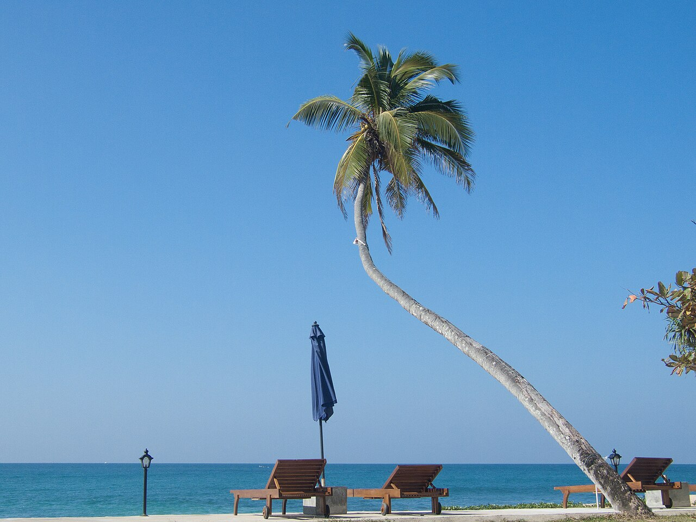

Places with a point of view
Characterful homes, welcoming hosts, and a sense of place in every corner of the island.
A PLACE TO BELONG
We believe the best trips are measured in the little things.
OUR POINT OF VIEW
Lanka Stayz is a celebration of the places and people that make Sri Lanka unforgettable. We bring together thoughtfully chosen stays — from the coast to the highlands — so your time here feels less like checking in and more like finding your place.
Our sample collection is a starting point for the kind of platform we want to build: warm, considered, and connected to the island.
Find your stay
THE LANKA STAYZ WAY
Characterful homes, welcoming hosts, and a sense of place in every corner of the island.
A base for early starts, long lunches, spontaneous detours — and doing absolutely nothing.
From familiar favourites to tucked-away corners, discover Sri Lanka beyond the obvious.